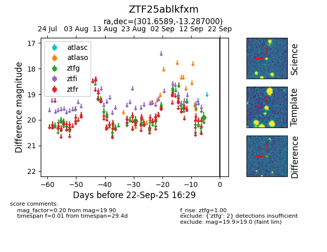

FINK: ZTF25ablkfxm
Lasair: ZTF25ablkfxm
ALeRCE: ZTF25ablkfxm
ZTF25ablkfxm (ztf,fink)
equatorial (ra, dec) = (301.6589,-13.28700)
galactic (l, b) = (29.1108,-22.57700)

last ztfg=19.90
2 ztfg detections